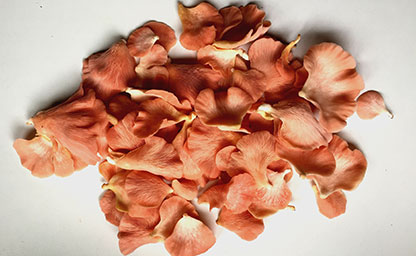
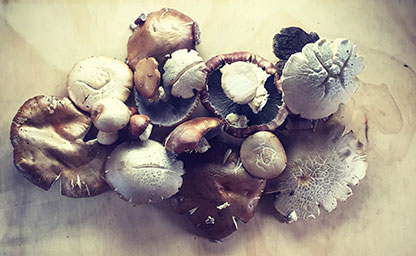
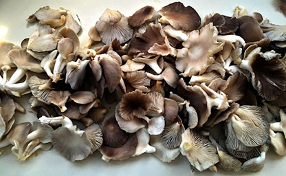

Our Mushrooms
As the temperatures drop we shift to cooler loving species such as Phoenix Oyster and Wine Cap.

Pink Oyster
As the name suggests, this is a beautiful coral-pink mushroom that is as lovely to look at as is it delicious to eat! Very popular with chefs and domestic foodies alike, it prefers the warmer Summer months of New Zealand but grows all year round in it's native country of Australia where is occurs naturally in coastal Queensland. It has similar properties to it's cousin the Phoenix Oyster, with a slightly milder taste. When cooking in butter, the pigment is extracted into the butter, making the butter turn a amazing orange colour. Fantastic in broths and on omelettes we have these every morning for breakfast and never seem to get sick of them!

Wine Cap
Also known as 'Burgundy Mushroom' and 'Garden Giant' this incredible mushroom can have caps that reach 30cm in diameter! Popular in Eastern Europe for centuries, this flavoursome mushroom has made itself to New Zealand by stowing away it's spores in imported produce and wooden pallets. It can be found growing in wood-chips and mulched garden beds, often snuggling up to cauliflower and other vegetables in garden beds. It is delicious served up with roasted chestnuts as a warming Autumn dish or sliced into slabs, fried up with butter and layered on sourdough toast for breakfast.

Phoenix Oyster
This meaty mushroom is extremely popular worldwide and is the most cultivated mushroom in Europe and North America. It is a cooler climate species that traditionally emerges in Autumn and early Winter. It has been cultivated in New Zealand for several years and was one of the first exotic commercially cultivated species to be permitted by the Ministry of Primary Industries. Scientific studies have concluded that extracts of this species reduces the risk of cancer and mitigates spread of tumour cells. It has also been shown to halt the progression of diabetes, have antimicrobial properties and exhibit antioxidant activity.